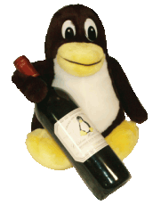

 En Julio, algunos miembros del equipo de LinuxFocus asistieron al Libre Software Meeting en Burdeos (Francia). Este encuentro mejora con el tiempo. Este año se ha añadido un nuevo e importante tema: seguridad informática. Fue un intento exitoso, puesto que mucha gente asistio a las conferencias. La mayor parte de los ponentes eran bien conocidos en el campo de la seguridad: puedes comprobar la lista en esta URL. Sin embargo, en el mundo real, la seguridad informática es un tema bastante confidencial, puesto que la gran mayoría de los usuarios, sean profesionales o no, no entienden completamente los retos que plantea.
Un ejemplo nos viene desde Francia, donde una revista dedicada a la seguridad llamada MISC que ha aparecido hace aproximadamente un año probablemente dejará de publicarse debido a la falta de lectores. Es una pena puesto que proporcionaba información de muy alta calidad. Pero el LSM no se enfocó sólo hacia la seguridad. Todos los temas usuales estaban representados: documentación, programación, comunicaciones, etc. Por ejemplo el Linux Documentation Project anunció su reorganización en equipos según idiomas. Otro tema muy importante y que no se puede ignorar estaba presente: software libre para personas con problemas visuales.
|
¿ Alguna aplicación o proyecto interesante?
Escribe sobre ella en LinuxFocus! más... |
Georges Tarbouriech
 Understanding HD44780 compatible LCD-displays, por Jan Svenungson
Contador de Frecuencia de 1Hz-100Mhz con visor LCD e interfaz RS232, por Guido Socher
FreeBSD, una alternativa real, por Georges Tarbouriech
Virus: nos afecta a todos, por Christophe Blaess
Usando BibTeXML en DocBook XML para escribir artículos científicos, por Egon Willighagen
La hora de Jazz++, por Katja Socher
Midi with alsa, por Guido Socher
Understanding HD44780 compatible LCD-displays, por Jan Svenungson
Contador de Frecuencia de 1Hz-100Mhz con visor LCD e interfaz RS232, por Guido Socher
FreeBSD, una alternativa real, por Georges Tarbouriech
Virus: nos afecta a todos, por Christophe Blaess
Usando BibTeXML en DocBook XML para escribir artículos científicos, por Egon Willighagen
La hora de Jazz++, por Katja Socher
Midi with alsa, por Guido Socher
split -b 1420k granficheroEsto nos produce varios ficheros de 1420k: xaa, xab, ...
cat xaa xab > granficheroEsta es incluso una solución portable. Para ensamblarlos bajo dos usamos:
copy /b xaa + xab granfichero /b
|
© 2002 LinuxFocus Página de contacto con LinuxFocus |